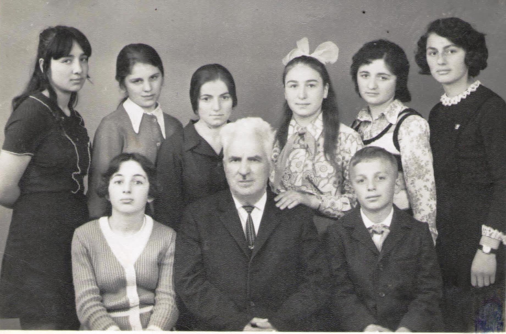

გომბორის ახლოს რომ შევჩერდი
ხარიტონ ციცხვაია დაიბადა 1905 წელს, ახლანდელი გეგრჭკორის რაიონის სოფელ ლეციცხვაიეში. "ვსწავლობდი მარტვილის გიმნაზიაში. მისი გადაკეთების შემდეგ დავამთავრე ჰუმანიტარული ტექნიკუმი". ასე იწყება გომბორელი მასწავლებლის ხარიტონ ციცხვაიას "ავტობიოგრაფია", რომელიც ახლაც ინახება ჩვენს არქივში.
საქართველოდან შორს, რუმინეთში, ტურისტული მოგზაურობის დროს გავიცანი და გულწრფელად შემიყვარდა ეს მოკრძალებული, ჭკვიანი და კეთილი პიროვნება. 1979 წლის 15 იანვარს დაწერილი ამ "ავტობიოგრაფიის" მიხედვით, ხარიტონ ციცხვაია ჯერ თბილისის სახელმწიფო უნივერსიტეტის ეკონომიკურ ფაკულტეტზე შესულა, მაგრამ ოჯახური მდგომარეობის გამო ვერ დაუმთავრებია. უფრო გვიან დაუმთავრებია თბილისის ა.პუშკინის სახელობის პედაგოგიური ინსტიტუტის სრული კურსი ისტორიის სპეციალობით. მუშაობა დაიწყო 1925 წლის სექტემბერში, დაწყებითი კლასის მასწავლებლად თიანეთში, ხოლო 1926 წლიდან ორი წლის განმავლობაში საგარეჯოს რაიონის სოფელ კოჭბანის დაწყებითი სკოლის გამგე-მასწავლებლად უმუშავია. 1928 წლის სექტემბრიდან ამავე რაიონის სოფელ გომბორში გლეხი ახალგაზრდობის სკოლის გამგის მოადგილედ და მასწავლებლად გადაუყვანიათ, ხოლო შემდეგ ამ სკოლის ხელმძღვანელიც გამხდარა და საშუალო სკოლის დირექტორიც. რაც მთავარია, გომბორელი შავშვების სულიერი მეგობარი ყოფილა სიცოცხლის უკანასკნელ წუთამდე. მრავალ თაობას გატაცებით ასწავლიდა სამშობლოს ისტორიას.
